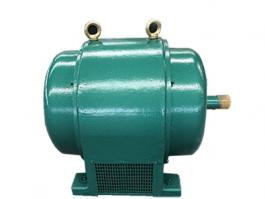
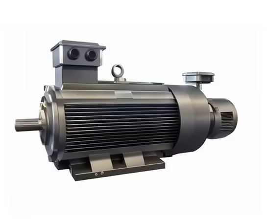

一、产品概述
YR IP44系列低压三相异步电动机是一款封闭式绕线转子三相异步电动机，采用先进的电磁设计和优质材料制造，具有启动转矩大、调速性能好、运行可靠、维护方便等特点。该系列电动机严格遵循JB/T 7119-2022《YR系列（IP44）绕线转子三相异步电动机技术规范》等国家标准，其功率等级与安装尺寸符合国际电工委员会（IEC）标准，便于设备配套和替换。
YR IP44系列电动机的额定电压为380伏，额定频率为50赫兹。功率范围覆盖4千瓦至315千瓦，机座号从132～355，能够满足不同工业场景的动力需求。
作为工业动力核心，YR IP44系列电动机适用于驱动各种重载机械设备，如压缩机、破碎机、卷扬机、风机、水泵、传输带等。其封闭式结构确保了在多种工业环境下的可靠运行，是矿山、机械工业、石油化工、发电厂及各种工矿企业的理想原动机。
二、核心技术特点
1. 卓越的启动性能
YR IP44系列电动机采用绕线转子设计，能在较小的启动电流下提供较大的启动转矩，有效降低对电网的冲击。这种设计解决了普通鼠笼式电动机在重载启动时电流过大而转矩不足的问题，特别适合带负载启动的工况。
2. 灵活的调速特性
绕线转子结构使电动机具有一定的调速范围，可通过外接电阻实现速度调节，满足不同工况需求。这一特性使得YR IP44系列电动机在需要速度控制的应用场合表现出色，提供了比普通鼠笼电动机更灵活的运行方式。
3. 高效的电气特性
YR IP44系列电动机具有效率高、性能好、噪声低、运行可靠等特点。电动机采用B级绝缘或F级绝缘系统，绝缘性能可靠，寿命长。其较高的效率水平不仅能有效降低运行成本，还为社会带来了巨大的节电经济效益。
三、技术参数与性能指标
YR IP44系列低压三相异步电动机覆盖了广泛的技术规格，满足不同工业场景的动力需求。主要技术参数如下。
表：YR IP44系列电动机主要技术参数
| 参数类别 | 技术规格与性能指标 |
|---|---|
| 机座号范围 | H132～H355 |
| 额定功率 | 4kW～315kW |
| 额定电压 | 380V（也可制成220V、400V、415V、660V、1140V等） |
| 额定频率 | 50Hz（也可按用户要求制成60Hz） |
| 防护等级 | IP44（能防止直径大于1mm固体异物及任何方向溅水的影响） |
| 绝缘等级 | B级或F级 |
| 冷却方式 | IC411（全封闭自扇冷式） |
| 工作制 | S1（连续工作制） |
| 安装形式 | IMB3、IMB5、IMB35等标准安装形式 |
性能特征说明
YR IP44系列电动机在启动特性、运行性能和调速范围等方面均表现出色：
优良的启动特性：启动电流小但启动转矩大，能轻松带动重载设备启动
宽调速范围：通过转子回路外接电阻，可在一定范围内平滑调节转速，满足不同工艺需求
低振动低噪声：采用优化设计和精密制造工艺，电动机运行平稳，振动小，噪音低
较高的功率因数：优化设计使电动机具有较高的功率因数，提高电网质量，减少无功补偿设备投资
四、结构设计与配置
1. 电机主体结构
YR IP44系列低压三相异步电动机采用封闭式结构设计，每个部件都经过精心设计和优化：
防护外壳设计：电动机的防护等级为IP44，能防止直径大于1mm的固体异物及任何方向溅水的影响，防护性能优良，适应多种工业环境
定子结构：定子绕组采用B级或F级绝缘材料，绝缘性能可靠。绕组部分有可靠的固定，并经浸漆处理，具有可靠的电气强度及机械强度，坚固耐用
转子构造：采用绕线式转子结构，通过滑环与外接电阻器连接。转子绕组采用优质材料和精密制造工艺，确保电机运行平稳可靠
2. 接线与冷却系统
YR IP44系列电动机在接线与冷却方面采用了专业设计：
接线盒设计：接线盒设计合理，便于电气连接。根据用户需要，可以制成减速机专用电动机、水泵专用电动机、双轴伸电动机、特殊安装方式电动机等
冷却系统：采用IC411冷却方式（全封闭自扇冷式），通过内部风扇形成气流循环，有效带走电机产生的热量，确保电机在额定负载下持续稳定运行
五、应用领域与场景
YR IP44系列低压三相异步电动机凭借其优异的启动特性和可靠的运行性能，在众多工业领域得到广泛应用：
1. 重工业领域
矿山行业：用于驱动破碎机、卷扬机、提升机等重型设备，耐受恶劣工况
冶金行业：应用于轧钢机、压缩机等设备，提供可靠的动力支持
电力行业：用于发电厂的各种辅助设备，如风机、水泵等
2. 通用工业领域
压缩机与泵类设备：适用于压缩机、水泵等设备，提供高效的动力解决方案
传输机械：应用于传输带、运输机械等物料处理设备，满足连续运行需求
切削机床：用于各种机床设备的驱动，提供稳定的动力输出
3. 特殊应用场景
YR IP44系列电动机特别适用于以下特殊工况：
需要较大启动转矩的场合
馈电线路容量不足以启动鼠笼转子电动机的情况
启动时间较长和启动比较频繁的设备
需要小范围调速的应用
六、产品优势与价值
1. 运行可靠性
YR IP44系列电动机在可靠性方面具有明显优势：
坚固的结构设计：采用封闭式结构，能承受各种工况下的机械应力和热应力，确保长期稳定运行
高质量的绝缘系统：采用B级或F级绝缘材料，当海拔不超过1000米，冷却空气的温度不超过40℃时，电动机定子绕组的温升限度（电阻法）不超过80K。除极少数规格外电动机一般均有15K以上的温升裕度，延长电动机的使用寿命
良好的环境适应性：电动机适用于海拔不超过1000m、环境温度不超过40℃的环境下连续运行
2. 节能经济效益
YR IP44系列电动机具有显著的经济效益：
降低启动电流：较小的启动电流可减少对电网的冲击，降低供电设备容量需求
提高启动能力：较大的启动转矩能带动重载设备顺利启动，减少设备故障率
全生命周期成本低：长寿命设计和低维护需求使全生命周期成本大幅降低
体积小重量轻：全系列电动机比传统老产品体积平均缩小15%，重量平均减轻12%
3. 维护便利性
该系列电动机在设计上充分考虑了维护的便利性：
便于维护的结构设计：封闭式结构使日常检查、维护和检修工作更为便捷
模块化设计：关键部件采用模块化设计，降低维护难度和备件库存
长寿命设计：采用优质绝缘系统，设计寿命长，维护周期长
上一个：Y系列10KV高压三相异步电机下一个：ZTP系列铁路机车辅助直流电机